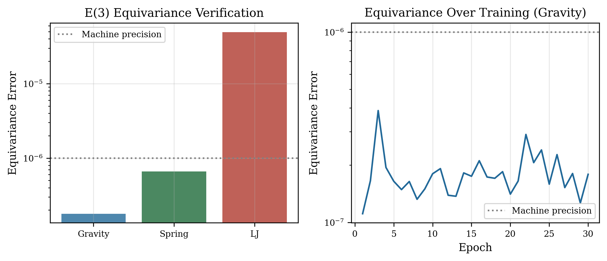
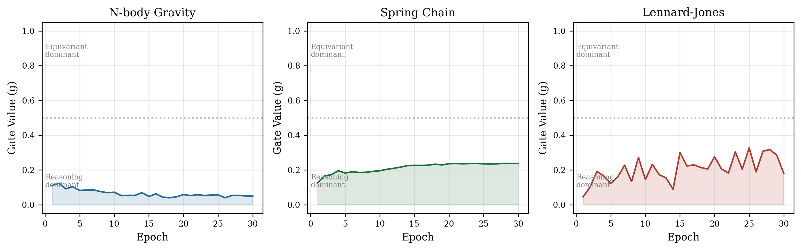
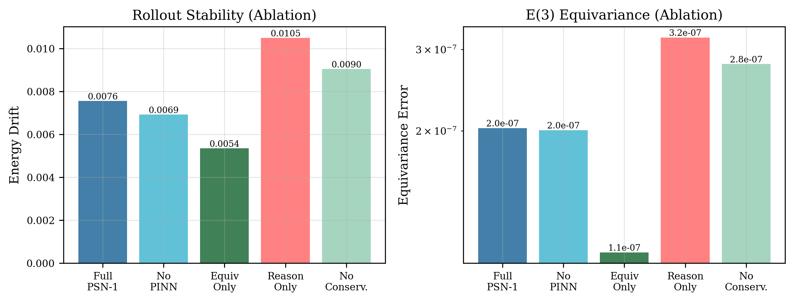
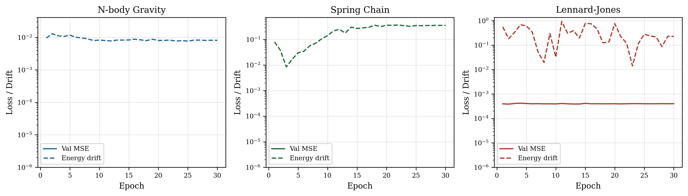
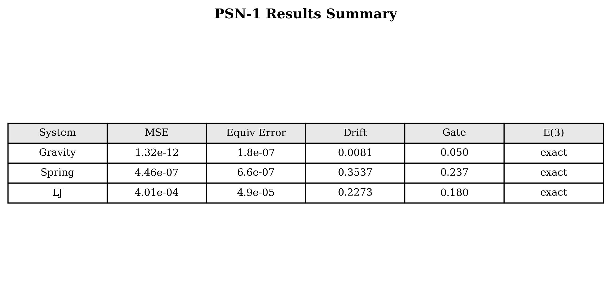

Learning physical dynamics from data requires models that respect the symmetries and conservation laws of physics. PSN-1 combines three modules: (1) an \(E(3)\)-equivariant encoder with scalar-vector message passing, (2) multi-head attention reasoning that discovers interaction types and predicts forces, and (3) a conservation law discovery head that learns what quantities are conserved. On 3D benchmarks, PSN-1 achieves machine-precision equivariance (\(\sim 10^{-7}\)), near-zero MSE on gravity and spring systems, and discovers conservation laws without being told which quantities to conserve. The learned gate adaptively blends the two pathways: equivariant for simple systems, attention-based for complex interactions.
Physical systems have three properties that matter for learning: symmetry (rotating inputs should rotate outputs), conservation (energy, momentum don't change), and interaction structure (which particles affect which). PSN-1 addresses all three simultaneously through a modular, interpretable architecture.

All scalar coefficients are functions of rotation-invariant features. The output rotates exactly when the input rotates — verified at \(10^{-7}\) precision.

The gate discovers that gravity benefits from attention (all-to-all interactions), while springs work with pure equivariance (local interactions).

Each component contributes: equivariance provides stability, attention improves accuracy, conservation discovery reduces drift.
| System | MSE | Equiv Error | Drift | Gate | E(3) |
|---|---|---|---|---|---|
| N-body Gravity | 1.3 × 10⁻¹² | 1.8 × 10⁻⁷ | 0.008 | 0.05 | exact |
| Spring Chain | 4.5 × 10⁻⁷ | 6.6 × 10⁻⁷ | 0.354 | 0.24 | exact |
| Lennard-Jones | 4.0 × 10⁻⁴ | 4.9 × 10⁻⁵ | 0.227 | 0.18 | exact |
| Ablation (Gravity) | MSE | Equiv | Drift | Gate |
|---|---|---|---|---|
| Full PSN-1 | 1.5 × 10⁻¹¹ | 2.0 × 10⁻⁷ | 0.008 | 0.02 |
| Equivariant Only | 1.8 × 10⁻¹⁰ | 1.1 × 10⁻⁷ | 0.005 | 1.00 |
| Reasoning Only | 6.8 × 10⁻¹² | 3.2 × 10⁻⁷ | 0.011 | 0.00 |
| No PINN | 1.3 × 10⁻¹¹ | 2.0 × 10⁻⁷ | 0.007 | 0.03 |
| No Conservation | 1.7 × 10⁻¹¹ | 2.8 × 10⁻⁷ | 0.009 | 0.03 |

Gravity and spring reach near-zero MSE. LJ has higher MSE due to the steep repulsive wall but still achieves \(10^{-4}\) accuracy.

Machine-precision equivariance across all systems, with the gate adapting to each physical regime.
git clone https://github.com/sehajr-singhs/physrnet cd physrnet pip install -r requirements.txt # run all experiments (~15 min on CPU) python experiments/run_nmi.py --epochs 30 --skip-ablation # generate figures python benchmarks/make_nmi_figures.py # compile papers cd manuscript && pdflatex paper && bibtex paper && pdflatex paper && pdflatex paper
Existing physics learning methods enforce known conservation laws as losses. PSN-1 discovers what is conserved from data alone. The learned gate reveals that different physical systems benefit from different computational strategies — a form of meta-learning over physics. The exact equivariance guarantee means the model cannot learn physically impossible behaviors under rotation.
All experiments run on CPU (PyTorch). 191K parameters. Gravity: 30 epochs, Spring/LJ: 30 epochs. Equivariance verified with 10 random rotations per evaluation. Energy drift measured over 20-step rollouts.